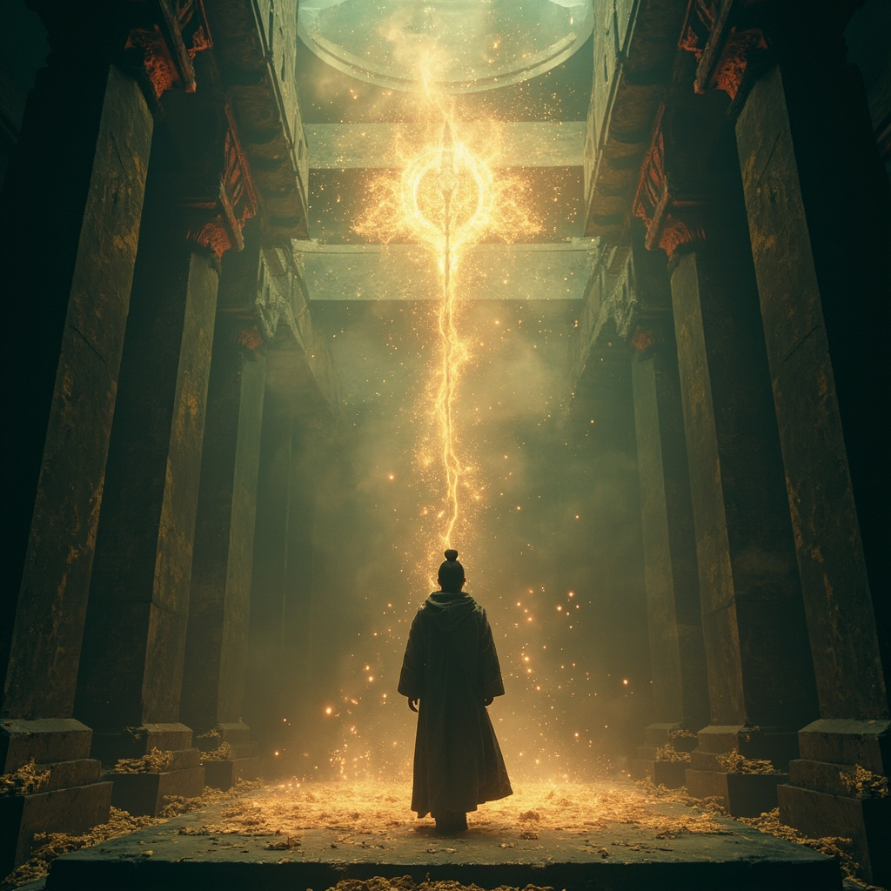
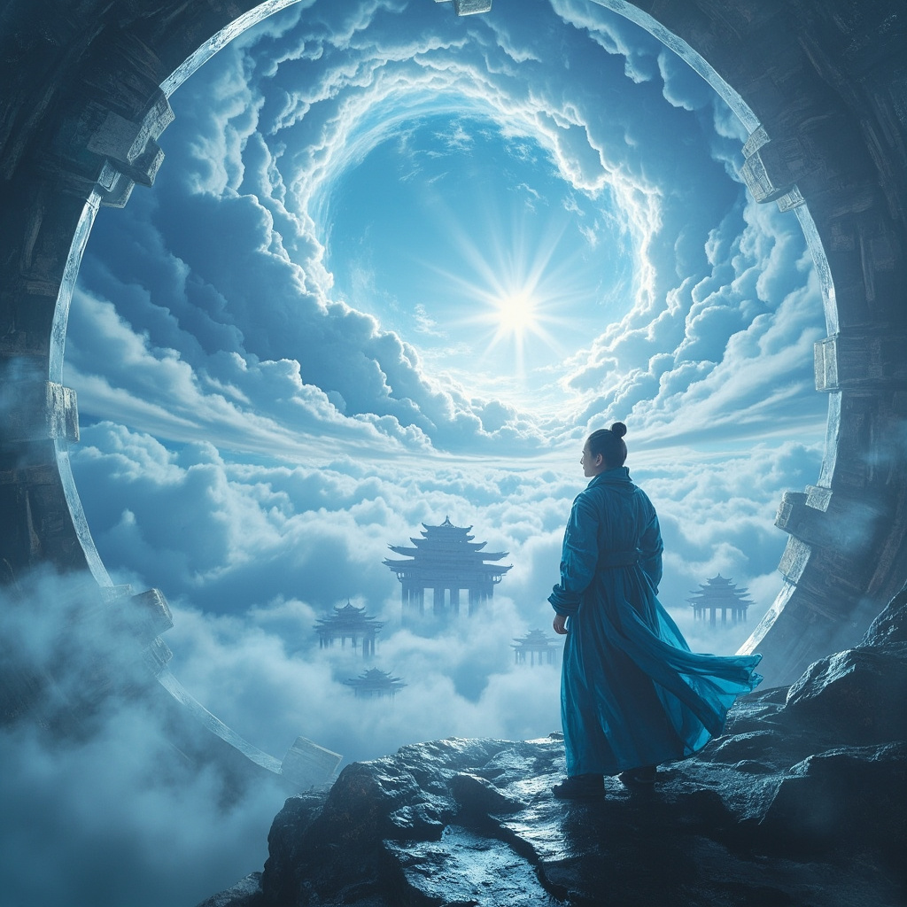
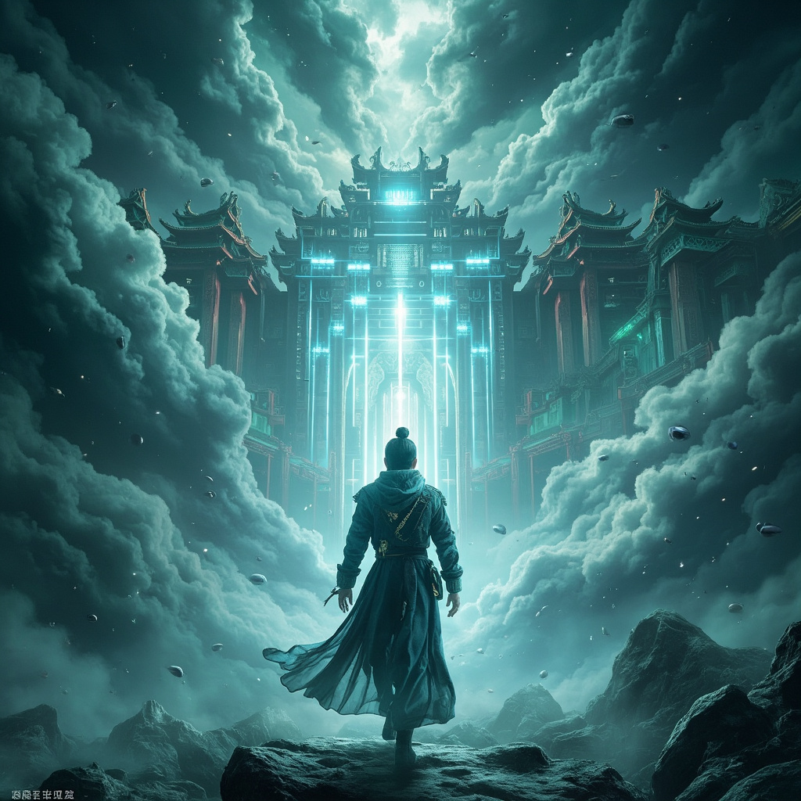
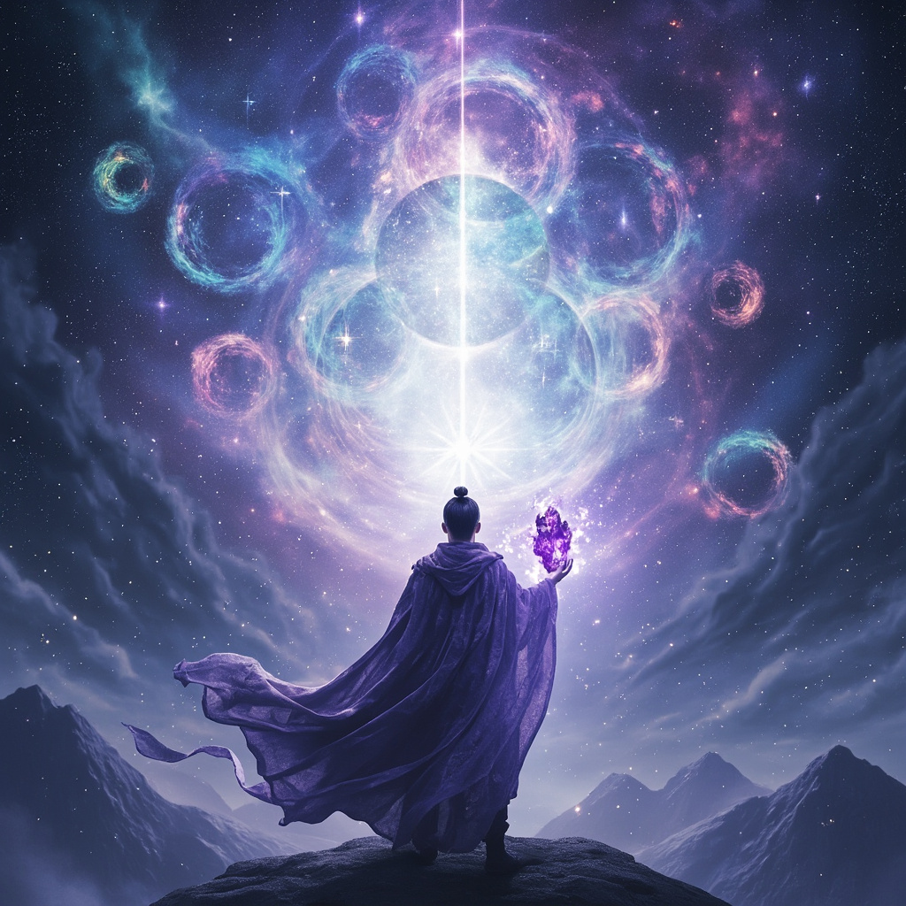
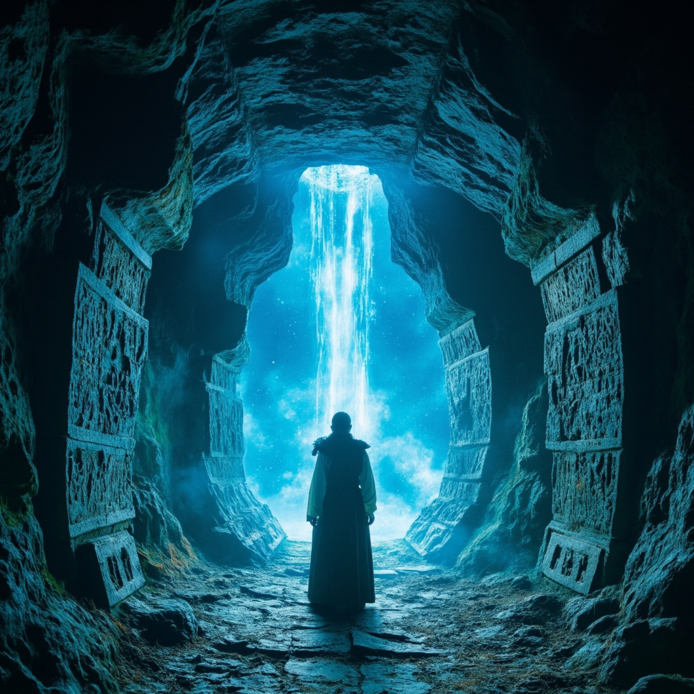
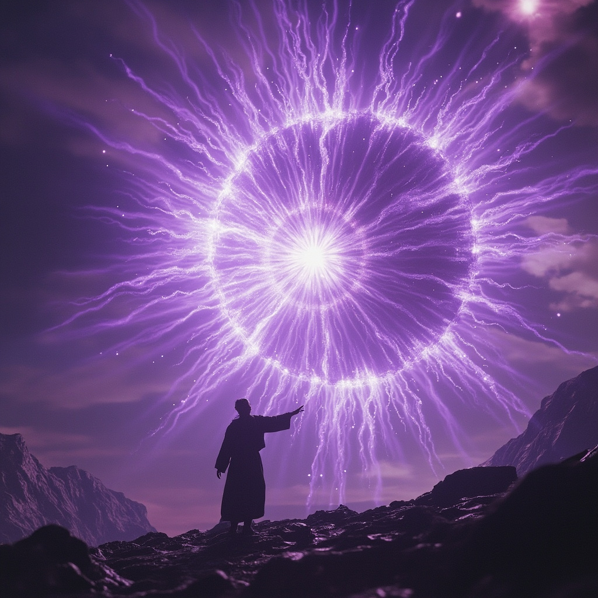
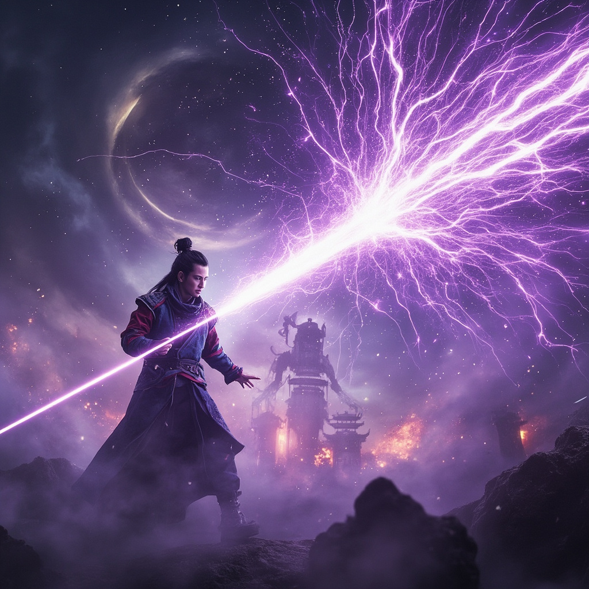
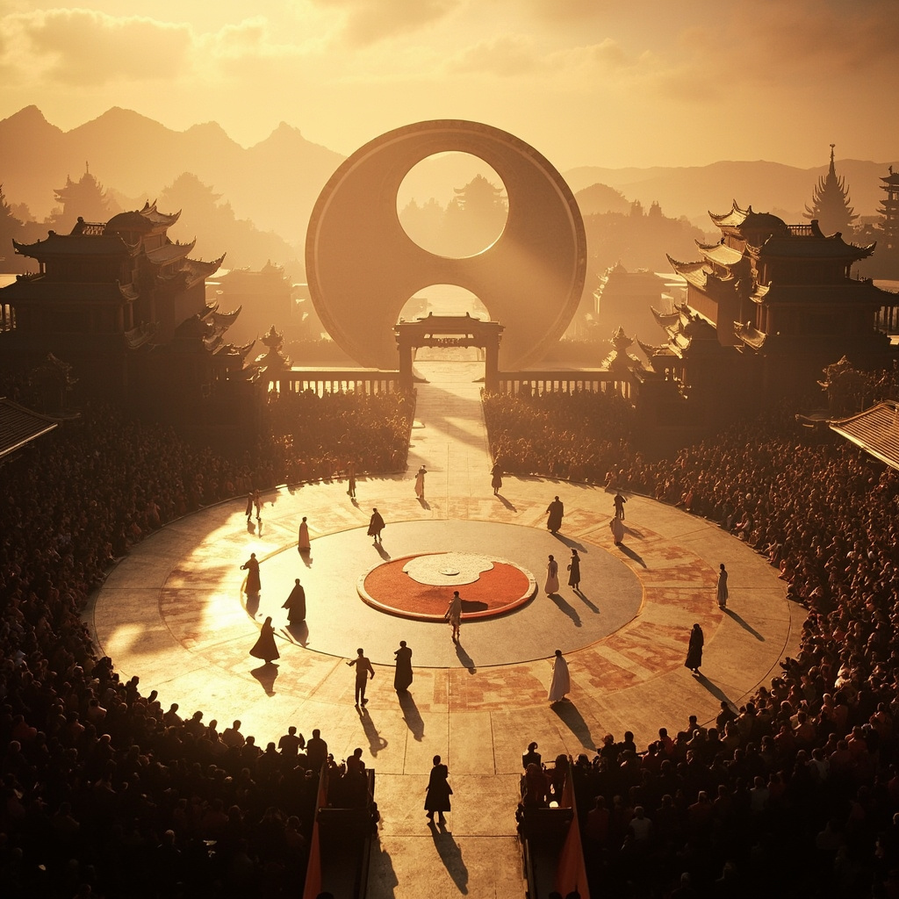

《科技修真傳》有聲畫版本 - 圖文並茂 + 完整朗讀

林塵接受遠古傳承，戰勝神秘首領，卻揭露更大陰謀！
遠征隊穿越星際，到達遠古遺址，遭遇機關陷阱！
神秘商人消失，遠征地圖現世，林塵組建遠征隊！
林塵在酒吧遇神秘商人，蓬萊聖物現身，拍賣會遭襲！

蓬萊危機解除後，林塵靜養康復，發現神秘勢力崛起！
虛擬與現實的界限開始模糊，林塵發現兩個世界之間的連接通道，面臨身份認同危機...
林塵成功凝聚數據神格後，意外觸發潛能，進入虛擬空間構建自己的神國！
林塵發現神秘晶片中的數據神格碎片，開始凝聚自己的數據神格！

林塵率領聯軍與蓬萊長老並肩作戰，使用新法寶擊退敵人！
蓬萊仙境遭遇危機，林塵決心守護蓬萊，再次前往蓬萊！
林塵被任命為蓬萊使者，挑戰修煉塔，戰勝守護靈獸獲得獎勵！
林塵在蓬萊後山修煉，吸收靈泉靈氣，實力大增！
林塵通過傳送陣前往蓬萊仙境，發現蓬萊和聯盟的歷史淵源！

混沌吞噬者被消滅後，紫霄世界迎來久違的和平！林塵在天璇塔沉思，回顧多元宇宙之旅。紫玄真人將世界之鑰交予林塵，囑託他守護多元宇宙。林塵突破化神期，踏上通往未知世界的新征程。
鴻蒙守護者現身，賜予林塵鴻蒙靈芯！終極對決混沌吞噬者，多元宇宙歸元斬一劍斃命！紫霄世界迎來勝利曙光，新旅程即將展開。
混沌吞噬者大軍壓境，修真聯盟七仙域聯手迎敵，林塵啟動靈芯終極模式，銀光破暗之際，金色大門再現！
林塵與聯盟高層談判成功，進入修煉塔接受考驗，實力大增！
林塵在聯盟研究秘密裝置，揭開蓬萊仙境和聯盟的歷史淵源！
林塵發現隱蔽的實驗室，揭開了蓬萊仙境和靈數聯盟的秘密！
林塵在聯盟都市探索，結識神秘高層人物，開始新的征程！
林塵告別蓬萊仙境，踏上新旅程，來到靈數聯盟核心城市！

林塵進入神秘山洞，發現太極陣法，修煉太初系統，實力再次突破！
林塵探索地下秘境，發現奇異靈石，太初修煉實力大增！

林塵離開蓬萊仙境，前往靈數聯盟，發現上級靈脈，修為即將突破！
蓬萊仙境大戰結束，蕭衍長老犧牲，林塵獲得宗門大比冠軍。新旅程即將開始！
蓬萊仙境大戰爆發！林塵啟動太初系統，蕭衍長老犧牲自己啟動最強模式，擊退靈數聯盟大軍！

蓬萊仙境遭遇靈數聯盟總裁厲天翔率領的旗艦攻擊！護山大陣被破，蓬萊仙境面臨最大危機！

林塵與天才學院第一天才歐陽雲在蓬萊仙境太極競技場上巔峰對決！靈芯系統能否戰勝傳統修真？
蓬萊仙境舉行宗門大比，林塵在決賽中大放異彩！戰後慶功宴熱鬧非凡，修煉之路更上一層樓。
林塵血脈覺醒，得知靈根真相——原來是上古基因編輯的產物！眾人傳送至蓬萊仙境，展開修煉之路。
明鏡等人來到安全屋，意外遇見失蹤二十年的蕭衍——靈數聯盟的長老！
林塵、明鏡、顧澄三人穿越廢棄地鐵隧道，遭遇自動防禦炮台攻擊！
林塵在靈脈核心進行前所未有的工程，開始建立覆蓋全城的靈數網絡。
林塵覺醒，胸口晶片碎裂。信息靈氣覺醒，以手擋下敵人攻擊並反彈。
林塵進入心鏡迷宮，在記憶迴廊中重溫三年前的噩夢。隨後墜入黑暗虛無，聽到自己充滿絕望的聲音。
林塵揭示末法時代的真相：靈氣是可編程粒子，修仙的本質是生命體與粒子的諧振。新成員們感受到靈氣覺醒。
林塵來到數據宗臨時基地，見證第二代靈啟機原型測試。卻遭遇六個敵人快速接近！
林塵康復後，利用靈氣結晶加速修煉，掌握靈罡護體和靈刃兩門功法，實力大進。
太初系統任務模塊啟動，第一個主線任務：收集靈氣結晶 × 10。林塵開始修煉靈罡護體功法。
林塵啟動太初系統，進入由數據構成的虛擬空間，天機子再現傳授修煉法門。
林塵發現上古天機閣的遺址，獲得傳說中的SSS級靈芯，遇見天機子殘魂。
林塵在廢墟城市中探索，面對靈化獸的威脅，運用靈芯系統戰鬥。
林塵深入研究靈芯技術，揭開末法時代的真相，開始數據化修煉之路。
末法元年一百四十二年，林塵在廢墟中獲得神秘的靈芯系統，踏上修真之路。